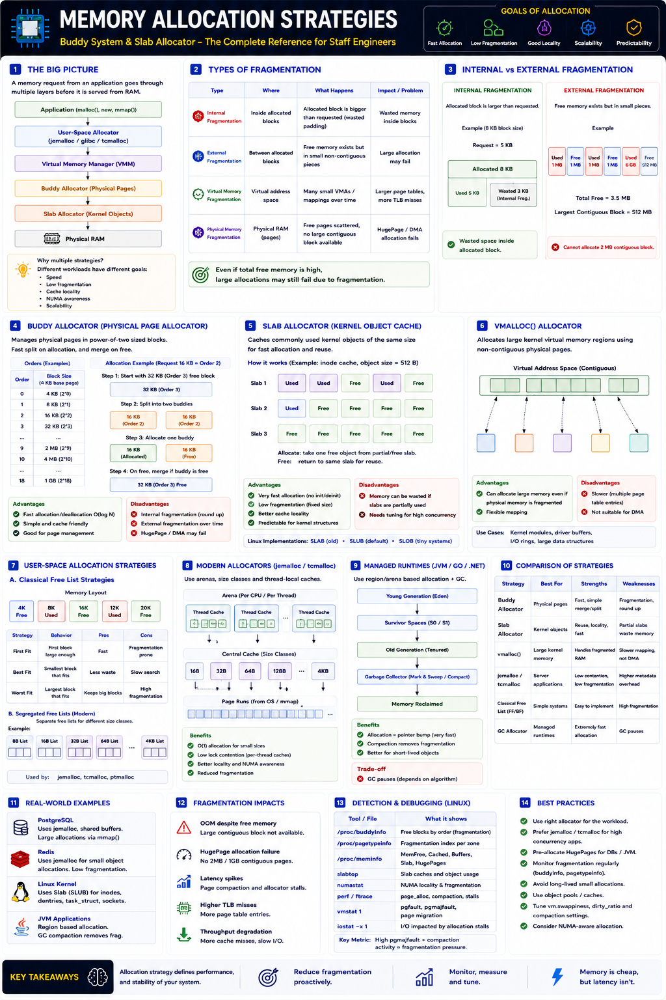

Buddy System, Slab Allocator, jemalloc — Staff Engineer level
The Big Picture
When an application calls malloc(), new Object(), or mmap(), memory is never allocated directly from RAM. The request passes through multiple allocation layers, each optimized for a different purpose.
Why Multiple Allocation Strategies Exist
No single allocator works well for every workload.
| Workload | Requirement |
|---|---|
| JVM | Millions of tiny objects |
| PostgreSQL | Large shared memory |
| Linux Kernel | Millions of fixed-size structures |
| Network Stack | Low-latency packet buffers |
| Redis | Small, high-frequency allocations |
Layer 1 — User-Space Allocator
Applications use allocators like glibc malloc, jemalloc, tcmalloc, or mimalloc — never communicating directly with the kernel for small allocations.
Responsibilities
Behavior
mmap()Layer 2 — Virtual Memory Manager (VMM)
The VMM does not allocate physical RAM immediately. It reserves virtual address space and uses demand paging — physical memory is allocated only when the page is first accessed (page fault).
Layer 3 — Buddy Allocator
Manages physical pages in powers of two. Splits larger blocks on allocation and merges adjacent free blocks ("buddies") on free.
Allocation example (request 16 KB, only 32 KB available)
Strengths
Weaknesses
Layer 4 — Slab Allocator
Optimized for fixed-size kernel objects. Allocating an entire 4 KB page for a 512-byte inode wastes memory — the Slab Allocator avoids this.
Kernel objects using slab caches
SLAB vs SLUB vs SLOB
| Allocator | Target | Status |
|---|---|---|
| SLAB | Original Linux allocator | Legacy |
| SLUB | General-purpose Linux | Modern default |
| SLOB | Embedded / minimal systems | Niche |
Almost all production Linux systems use SLUB.
vmalloc() — Large Kernel Buffers
When Linux needs a large virtual region but contiguous physical memory is unavailable, it uses vmalloc() — virtually contiguous but physically non-contiguous.
Used by: kernel modules, driver buffers, large kernel memory.
Modern Allocators — jemalloc / tcmalloc
Modern allocators use arenas + size classes + thread-local caches instead of simple free lists (first-fit, best-fit, worst-fit), eliminating lock contention and fragmentation.
| Allocator | Strengths | Used By |
|---|---|---|
| jemalloc | Low fragmentation, NUMA-aware | Redis, PostgreSQL, ClickHouse |
| tcmalloc | Very fast, low contention | Google production systems |
| mimalloc | Compact, secure | Microsoft, .NET |
Managed Runtime Allocation (JVM / Go / .NET)
Region-based allocation with GC. Object allocation is often just a pointer increment — extremely fast. GC reclaims and compacts memory later.
End-to-End Allocation Flow
Kernel path
Real-World Examples
| System | Allocation Approach |
|---|---|
| PostgreSQL | Shared buffer cache via mmap(); jemalloc for heap |
| Redis | jemalloc; heavy small-object allocs, low fragmentation |
| Linux Kernel | Slab caches for task_struct, inode, dentry, socket bufs |
| JVM | Bump-pointer allocation in managed heap; GC reclaims |
Staff Engineer Thinking
Junior
Why is memory allocation slow?
Senior
Which allocator is being used?
Staff asks
Production Failure Scenarios
Huge Page Allocation Failure
Cause: Buddy allocator fragmented · Fix: Preallocate Huge Pages or run compaction
High Kernel Memory Usage
Cause: Slab caches growing continuously · Fix: Inspect slabtop to identify leaking caches
High Allocation Latency
Cause: Allocator contention in multithreaded app · Fix: Switch to jemalloc or tcmalloc
NUMA Imbalance
Cause: Allocations hitting remote NUMA nodes · Fix: NUMA-aware allocators + CPU affinity
Staff Engineer Decision Framework
| Scenario | Recommended Strategy |
|---|---|
| Kernel metadata | Slab Allocator |
| Physical page allocation | Buddy Allocator |
| High-concurrency server | jemalloc / tcmalloc |
| Large virtual kernel buffers | vmalloc() |
| JVM workloads | Managed heap + GC |
| Databases | Huge Pages + custom allocators |
Allocation Strategy Comparison
| Strategy | Best For | Strength | Weakness |
|---|---|---|---|
| Buddy Allocator | Physical pages | Fast split & merge | Fragmentation |
| Slab Allocator | Kernel objects | Reuse & cache locality | Cache overhead |
| vmalloc | Large kernel memory | Handles fragmented RAM | Slower mapping |
| jemalloc | Servers & databases | Low contention | Higher metadata |
| tcmalloc | Multi-threaded apps | Very fast | Extra memory use |
| GC Allocator | Managed runtimes | Extremely fast alloc | GC pauses |
Production Debugging Checklist
/proc/buddyinfo for page availability by orderslabtop)/proc/pagetypeinfo)malloc_info, jemalloc profiling)numastat)vmstat)Key Takeaways
